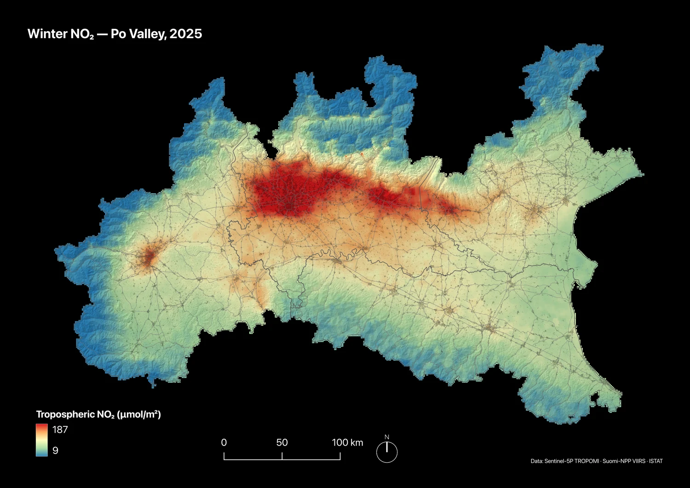
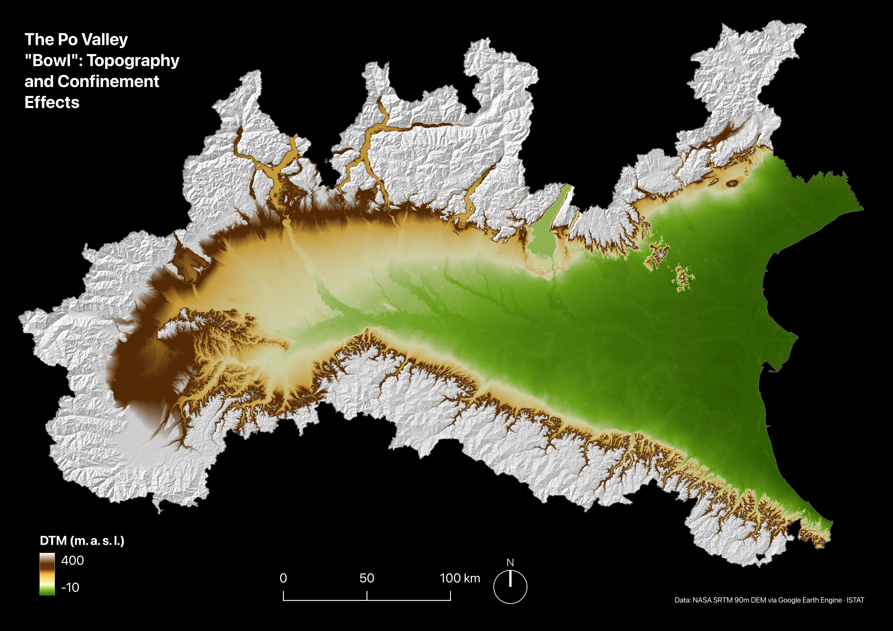
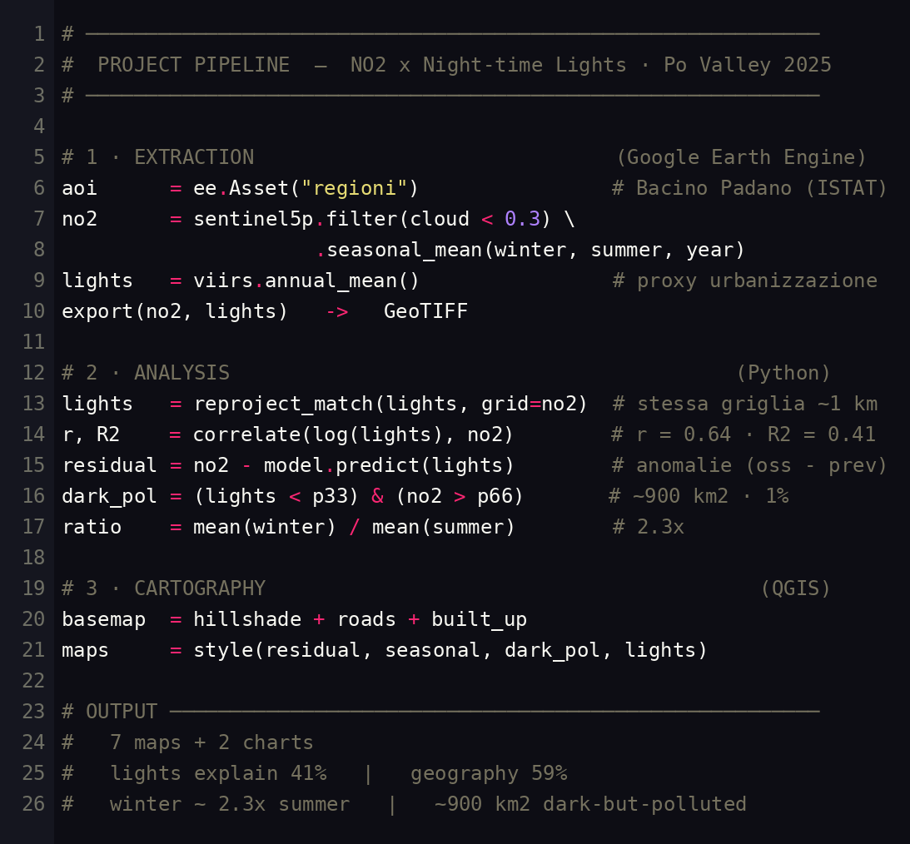
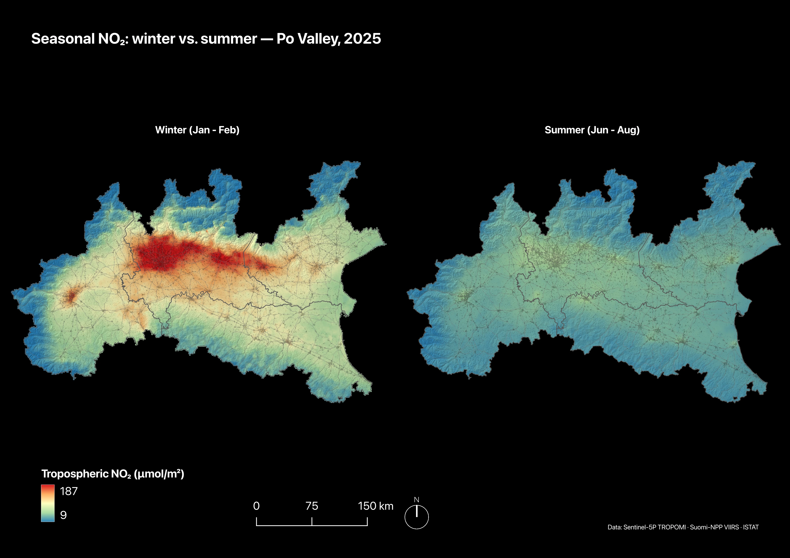
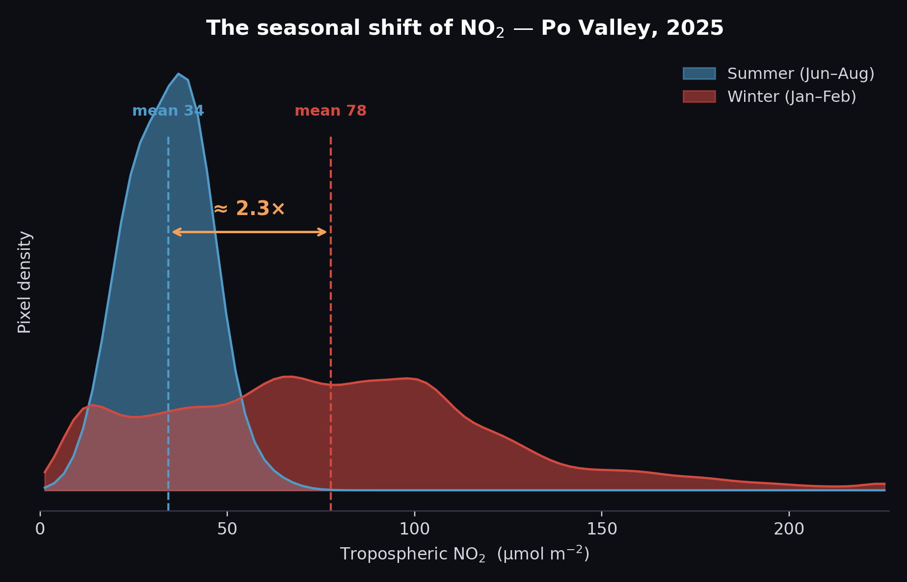
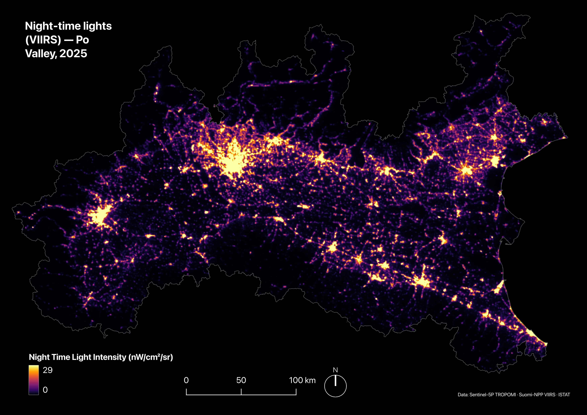
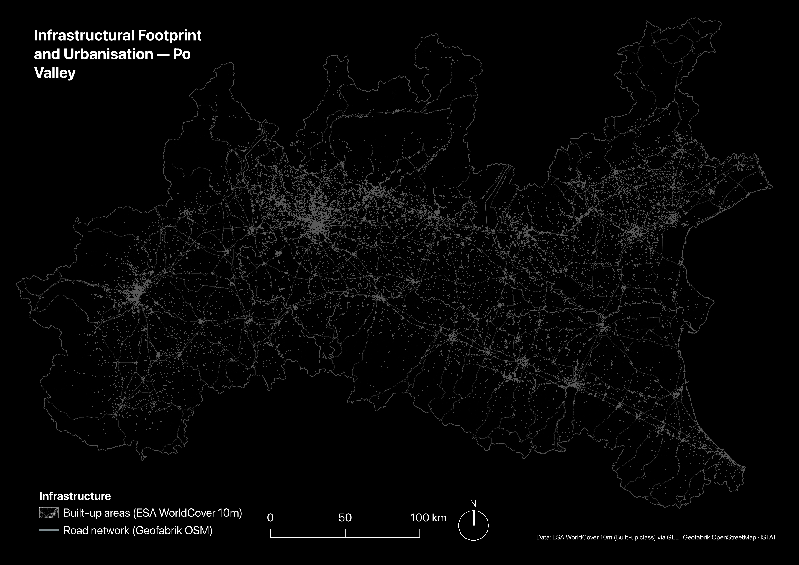
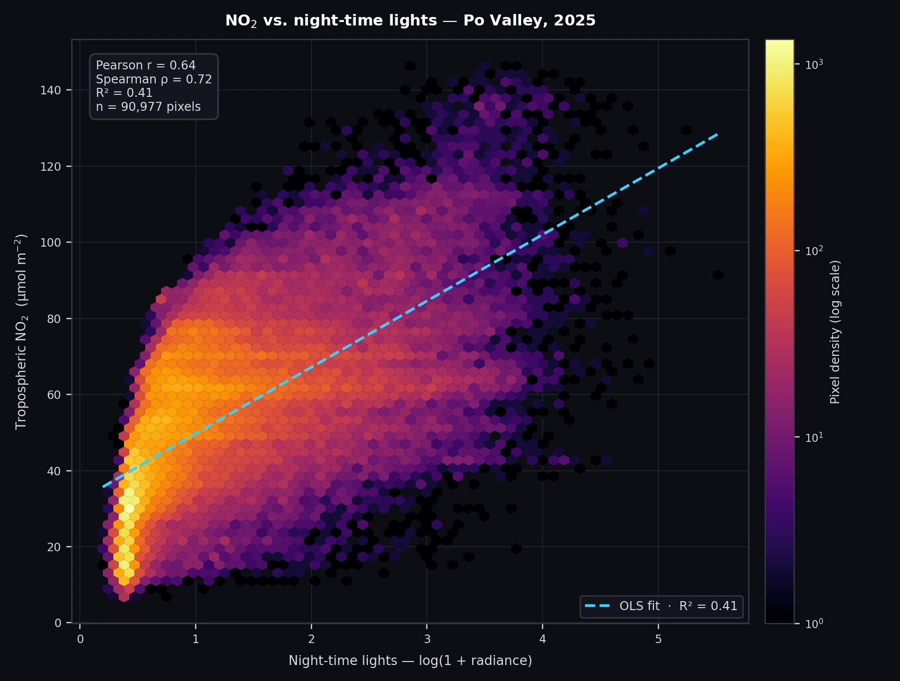
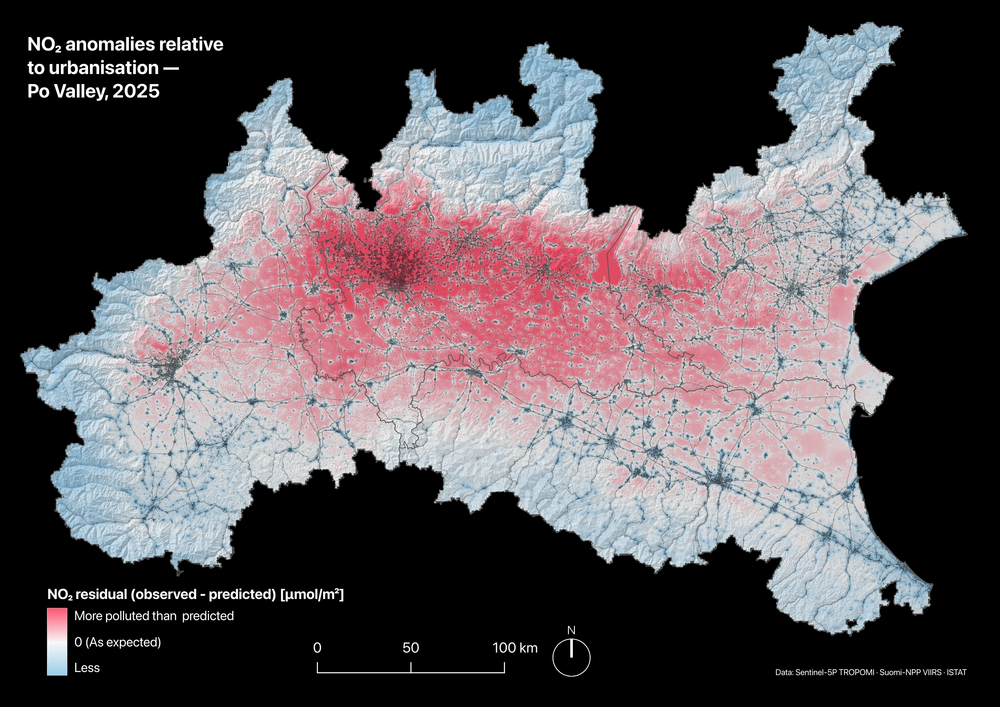
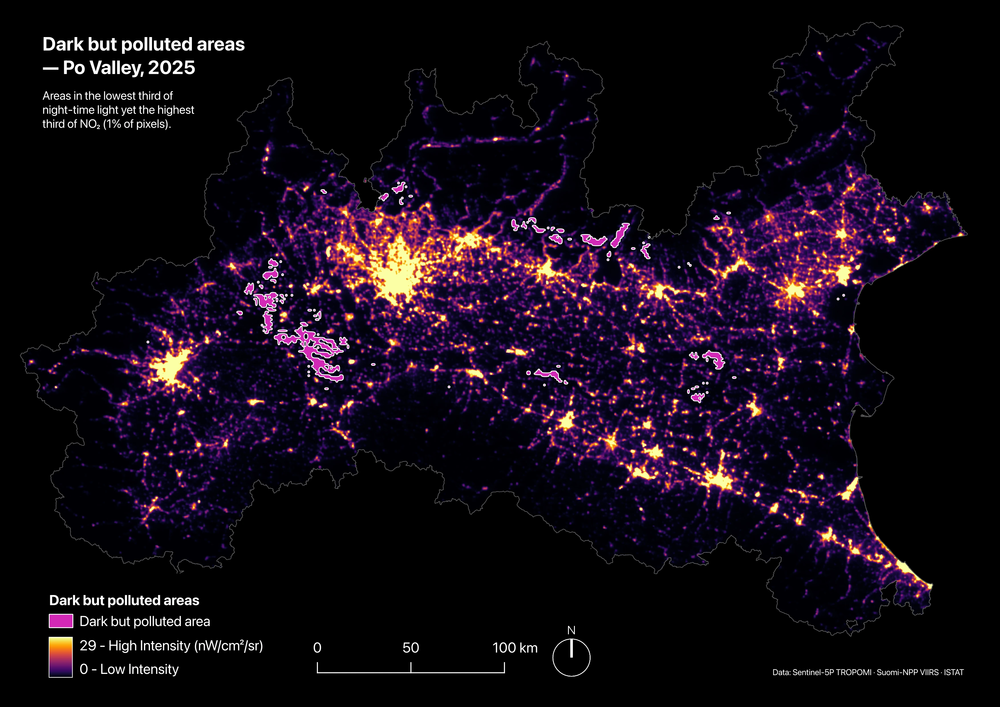

GIS Project · Remote SensingProgetto GIS · Telerilevamento
A satellite analysis of nitrogen-dioxide pollution and its link with urbanisation in the Po Valley — Sentinel-5P × VIIRS, 2025Un'analisi satellitare dell'inquinamento da biossido di azoto e del suo legame con l'urbanizzazione nella Pianura Padana — Sentinel-5P × VIIRS, 2025
The project studies the relationship between nitrogen-dioxide (NO₂) pollution and urbanisation in the Po Valley, one of the most polluted areas in Europe. Combining satellite data from Sentinel-5P/TROPOMI (NO₂) and Suomi-NPP/VIIRS (night-time lights, used as a proxy for urban density), a reproducible pipeline was built — from cloud extraction on Google Earth Engine, to statistical analysis in Python, through to cartography in QGIS. The key result: night-time lights explain about 41% of the spatial variability of NO₂, but the remaining 59% is driven by geography — the Po Valley basin traps the air even far from the cities.Il progetto studia la relazione tra inquinamento da biossido di azoto (NO₂) e urbanizzazione nel Bacino Padano, una delle aree più inquinate d'Europa. Combinando dati satellitari di Sentinel-5P/TROPOMI (NO₂) e Suomi-NPP/VIIRS (luci notturne, usate come proxy della densità urbana), è stata costruita una pipeline riproducibile — dall'estrazione cloud su Google Earth Engine, all'analisi statistica in Python, fino alla cartografia in QGIS. Il risultato chiave: le luci notturne spiegano circa il 41% della variabilità spaziale dell'NO₂, ma il restante 59% è guidato dalla geografia — la conca padana intrappola l'aria anche lontano dalle città.

Air quality in the Po Valley is a leading health and regulatory issue: the area frequently exceeds the European limits for NO₂ and particulate matter, and ground stations (ARPA) cover only isolated points. A satellite approach offers continuous, homogeneous coverage across the whole plain. The project produces three operational outputs: seasonal pollution maps, a statistical model that quantifies how much urbanisation explains NO₂, and an anomaly map that identifies the dark-but-polluted zones — useful for directing monitoring and policy where the network of stations, concentrated in urban centres, is sparsest.La qualità dell'aria nel Bacino Padano è un tema sanitario e normativo di primo piano: l'area supera con frequenza i limiti europei di NO₂ e particolato, e le centraline a terra (ARPA) coprono solo punti isolati. Un approccio satellitare offre una copertura continua e omogenea su tutta la pianura. Il progetto produce tre output operativi: mappe stagionali dell'inquinamento, un modello statistico che quantifica quanto l'urbanizzazione spieghi l'NO₂, e una mappa delle anomalie che individua le zone buie ma inquinate — utili per indirizzare monitoraggio e politiche là dove la rete di centraline, concentrata nei centri urbani, è più rada.
The study area is the central-western Po Valley (Piedmont, Lombardy, Veneto and Emilia-Romagna), the large basin enclosed between the Alpine arc to the north-west and the Apennines to the south. The "bowl" shape, together with the frequent winter thermal inversions, limits the mixing of the air and favours the accumulation of pollutants at ground level: it is one of the reasons the plain is among the most polluted areas in Europe. The AOI is defined by the ISTAT administrative boundaries; the working CRS is EPSG:32632 (WGS 84 / UTM 32N) and the analysed period is the year 2025, with seasonal composites for winter (Jan–Feb) and summer (Jun–Aug).L'area di studio è il Bacino Padano centro-occidentale (Piemonte, Lombardia, Veneto ed Emilia-Romagna), il grande catino chiuso tra l'arco alpino a nord-ovest e l'Appennino a sud. La conformazione a "conca", unita alle frequenti inversioni termiche invernali, limita il rimescolamento dell'aria e favorisce l'accumulo degli inquinanti al suolo: è una delle ragioni per cui la pianura è tra le aree più inquinate d'Europa. L'AOI è definita dai confini amministrativi ISTAT; il CRS di lavoro è EPSG:32632 (WGS 84 / UTM 32N) e il periodo analizzato è l'anno 2025, con composit stagionali per inverno (gen–feb) ed estate (giu–ago).

| Dataset | SourceFonte | TypeTipo |
|---|---|---|
| Administrative boundariesConfini amministrativi | ISTAT | Vector (polygon)Vettoriale (poligono) |
| Tropospheric NO₂ columnColonna troposferica di NO₂ | Sentinel-5P / TROPOMI — Copernicus (OFFL L3) | Raster ~1 km |
| Night-time lightsLuci notturne | Suomi-NPP / VIIRS DNB (stray-light corrected) | Raster ~500 m |
| DTM | NASA SRTM 90 DEM (via GEE) | Raster ~90 m |
| Built-up areasAree edificate | ESA WorldCover (via GEE) | Raster ~10 m |
| Road networkRete stradale | Geofabrik OSM | Vector (line)Vettoriale (linea) |

Extraction happens on Google's servers, without downloading raw data. A script computes the mean NO₂ composites — with a cloud filter (cloud_fraction < 0.3) — for winter, summer and the 2025 annual mean, plus the annual mean of the VIIRS lights, clipped to the AOI and exported as GeoTIFF.L'estrazione avviene sui server di Google, senza scaricare dati grezzi. Uno script calcola i composit medi di NO₂ — con filtro nuvole (cloud_fraction < 0.3) — per inverno, estate e media annua 2025, più la media annua delle luci VIIRS, ritagliati sull'AOI ed esportati come GeoTIFF.
The lights (~500 m) are aligned to the NO₂ grid (~1 km), explicitly handling the resolution mismatch between the two sensors. A logarithmic transformation is applied to the lights; Pearson and Spearman correlation, OLS regression and the residuals (observed − predicted) are computed. A dedicated mask isolates the pixels in the darkest third and in the most polluted third.Le luci (~500 m) vengono allineate alla griglia dell'NO₂ (~1 km), gestendo esplicitamente il mismatch di risoluzione tra i due sensori. Sulle luci si applica una trasformazione logaritmica; si calcolano correlazione di Pearson e Spearman, regressione OLS e i residui (osservato − previsto). Una maschera dedicata isola i pixel nel terzo più buio e nel terzo più inquinato.
Logarithmic transformation on the lights — night-time radiance is highly skewed: very few pixels (the city centres) have very high values, most are low. The logarithm compresses the extreme values and stretches out the low ones, linearising the relationship with NO₂ (which grows with diminishing returns relative to urbanisation): this way correlation and regression, which assume a linear relationship, remain valid.Trasformazione logaritmica sulle luci — la radianza notturna è molto sbilanciata: pochissimi pixel (i centri città) hanno valori altissimi, la gran parte è bassa. Il logaritmo comprime i valori estremi e distende quelli bassi, linearizzando la relazione con l'NO₂ (che cresce con rendimenti decrescenti rispetto all'urbanizzazione): così correlazione e regressione, che assumono una relazione lineare, restano valide.
OLS regression — it is the simplest, most transparent way to quantify the relationship. It provides the R² (the share of NO₂ variability explained by the lights, i.e. 41%), the slope and, above all, the residuals (observed − predicted): it is these that generate the anomaly map, i.e. the points where the real pollution deviates from that expected from urbanisation.Regressione OLS — è il modo più semplice e trasparente per quantificare la relazione. Fornisce l'R² (la quota di variabilità dell'NO₂ spiegata dalle luci, cioè il 41%), la pendenza e, soprattutto, i residui (osservato − previsto): sono questi a generare la mappa delle anomalie, cioè i punti in cui l'inquinamento reale devia da quello atteso dall'urbanizzazione.
Darkest third / most polluted third — to isolate the dark-but-polluted zones two thresholds are needed. Using percentiles (33rd for darkness, 66th for NO₂) instead of absolute values is a relative and robust choice: it self-adapts to the data distribution and avoids arbitrary cutoffs (in which units?). The intersection of the two opposite extremes — darkest third and dirtiest third — returns the sharpest anomaly, about 1% of the area.Terzo più buio / terzo più inquinato — per isolare le zone buie ma inquinate servono due soglie. Usare i percentili (33° per il buio, 66° per l'NO₂) invece di valori assoluti è una scelta relativa e robusta: si auto-adatta alla distribuzione dei dati ed evita cutoff arbitrari (in quali unità?). L'intersezione dei due estremi opposti — terzo più scuro e terzo più sporco — restituisce l'anomalia più netta, circa l'1% dell'area.
Print layout on a dark background: a diverging scale for the residuals, map themes for the seasonal comparison, polygonisation and smoothing for the dark zones.Layout di stampa su fondo scuro: scala diverging per i residui, map themes per il confronto stagionale, poligonizzazione e smoothing per le zone buie.
The diagram reproduces the entire pipeline in pseudo-code style: the three phases #1–#3 described above, and the key results — lights 41% / geography 59%, winter ≈ 2.3× summer, ~900 km² dark-but-polluted.Lo schema riproduce l'intera pipeline in stile pseudo-codice: le tre fasi #1–#3 descritte sopra, e i risultati chiave — luci 41% / geografia 59%, inverno ≈ 2,3× estate, ~900 km² buio-ma-inquinato.
Maps marked with i hide a description: hover over them (or tap, on phone and tablet) to reveal it.Le mappe contrassegnate con i nascondono una descrizione: passaci sopra il mouse (o toccale, da smartphone e tablet) per farla comparire.

The seasonal composites show the summer collapse of NO₂ — due to greater atmospheric mixing and the absence of heating — and the intense winter core over the central plain. On average, winter NO₂ is about 2.3× that of summer (77.6 vs 34.2 µmol/m² over 91,707 pixels; summer is 56% lower).I composit stagionali mostrano il crollo estivo dell'NO₂ — dovuto al maggiore rimescolamento atmosferico e all'assenza di riscaldamento — e il nucleo intenso invernale sul centro pianura. In media l'NO₂ invernale è circa 2,3× quello estivo (77,6 vs 34,2 µmol/m² su 91.707 pixel; l'estate è il 56% più bassa).

The distribution chart shows not only how much but how the season changes: in summer the values are compact at low, similar levels (well-mixed atmosphere), whereas in winter the distribution widens and slides to the right, with a long tail of high concentrations. It is not only an increase in the mean, but a higher and more unequal population of values — the signature of the Po Valley atmospheric stagnation caused by the winter thermal inversions.Il grafico della distribuzione mostra non solo quanto ma come cambia la stagione: d'estate i valori sono compatti su livelli bassi e simili (atmosfera ben rimescolata), mentre d'inverno la distribuzione si allarga e scivola verso destra, con una lunga coda di concentrazioni elevate. Non è solo un aumento della media, ma una popolazione di valori più alta e più disuguale — la firma del ristagno atmosferico padano dovuto alle inversioni termiche invernali.

The mean night-time radiance is the quantitative proxy for urbanisation used in the correlation model: it highlights the Turin–Milan–Verona axis and the Via Emilia. The map is shown at native resolution (~500 m); for the correlation analysis the data were then resampled onto the NO₂ grid (~1 km) — see § 5.La radianza notturna media è il proxy quantitativo dell'urbanizzazione usato nel modello di correlazione: evidenzia l'asse Torino–Milano–Verona e la via Emilia. La mappa è mostrata a risoluzione nativa (~500 m); per l'analisi di correlazione il dato è stato poi ricampionato sulla griglia dell'NO₂ (~1 km) — vedi § 5.

The built-up areas (ESA WorldCover 10 m) and the road network (OpenStreetMap / Geofabrik) show the real sources of NO₂: cities and infrastructure corridors. It is the physical context behind the luminous proxy, and it introduces two reading keys used later on — motorways as pollution corridors and the dark-but-polluted zones (countryside and industrial hubs far from urban centres).L'edificato (ESA WorldCover 10 m) e la rete stradale (OpenStreetMap / Geofabrik) mostrano le sorgenti reali dell'NO₂: città e corridoi infrastrutturali. È il contesto fisico dietro al proxy luminoso, e introduce due chiavi di lettura usate più avanti — le autostrade come corridoi di inquinamento e le zone buie ma inquinate (campagne e poli industriali lontani dai centri urbani).
The relationship between urbanisation (log of night-time radiance) and NO₂ is quantified with Pearson and Spearman correlation and an OLS regression. The logarithmic transformation linearises the relationship; the R² measures the share of NO₂ variability explained by the lights. The scatter plot (pixel density + regression line) summarises the model.La relazione tra urbanizzazione (log della radianza notturna) e NO₂ viene quantificata con correlazione di Pearson e Spearman e una regressione OLS. La trasformazione logaritmica linearizza la relazione; l'R² misura la quota di variabilità dell'NO₂ spiegata dalle luci. Lo scatter plot (densità dei pixel + retta di regressione) sintetizza il modello.

The model predicts, for each pixel, the NO₂ expected from the lights; the residual (observed − predicted) measures the gap. The residual map reveals an extensive red core over the lower plain — more polluted than predicted — the signature of the Po Valley atmospheric stagnation, while the reliefs turn out cleaner than predicted. A dedicated mask then isolates the zones in the darkest third and in the most polluted third: the dark-but-polluted areas.Il modello prevede, per ogni pixel, l'NO₂ atteso dalle luci; il residuo (osservato − previsto) misura lo scarto. La mappa dei residui rivela un nucleo rosso esteso sulla bassa pianura — più inquinato del previsto — firma del ristagno atmosferico padano, mentre i rilievi risultano più puliti del previsto. Una maschera dedicata isola poi le zone nel terzo più buio e nel terzo più inquinato: le aree buie ma inquinate.


The analysis over 90,977 pixels shows a positive and robust correlation between night-time lights and NO₂ — Pearson r = 0.64, Spearman ρ = 0.72 — with a regression that explains 41% of the variance (R² = 0.41). The remaining 59% is driven by geography: the residual map shows that the lower plain is polluted beyond what its urbanisation would predict. About 1% of the area (~900 km²) turns out dark but polluted — agricultural plains and infrastructure corridors far from urban centres. The seasonal comparison confirms the strong seasonality: summer is markedly cleaner than winter.L'analisi su 90.977 pixel mostra una correlazione positiva e robusta tra luci notturne e NO₂ — Pearson r = 0.64, Spearman ρ = 0.72 — con una regressione che spiega il 41% della varianza (R² = 0.41). Il restante 59% è guidato dalla geografia: la mappa dei residui mostra che la bassa pianura è inquinata oltre quanto la sua urbanizzazione prevederebbe. Circa l'1% dell'area (~900 km²) risulta buio ma inquinato — pianure agricole e corridoi infrastrutturali lontani dai centri urbani. Il confronto stagionale conferma la forte stagionalità: l'estate è nettamente più pulita dell'inverno.
In conclusion, the NO₂ of the Po Valley is produced by humans but governed by geography: the night-time lights tell where it is generated, the Po Valley basin where it accumulates. By stagnating and spreading, the pollution becomes an area-wide phenomenon that reaches even the countryside far from urban centres — and it is precisely this "geographic" share, made of atmospheric transport and of sources (roads, industries, agriculture) invisible to the lights, that urbanisation alone cannot explain.In conclusione, l'NO₂ del Bacino Padano è prodotto dall'uomo ma governato dalla geografia: le luci notturne dicono dove viene generato, la conca padana dove si accumula. Ristagnando e diffondendosi, l'inquinamento diventa un fenomeno d'area che raggiunge anche le campagne lontane dai centri urbani — ed è proprio questa quota "geografica", fatta di trasporto atmosferico e di sorgenti (strade, industrie, agricoltura) invisibili alle luci, che l'urbanizzazione da sola non può spiegare.
Google Earth Engine · Python (geopandas, rasterio, rioxarray, scipy, matplotlib) · QGIS · Git / GitHub · Remote sensing & atmospheric data · Raster map algebra · Spatial statistics (correlation, regression, residuals) · Cartographic design.
Data, scripts and the full processing pipeline are public.Dati, script e l'intera pipeline di elaborazione sono pubblici.
View the code on GitHubVedi il codice su GitHub